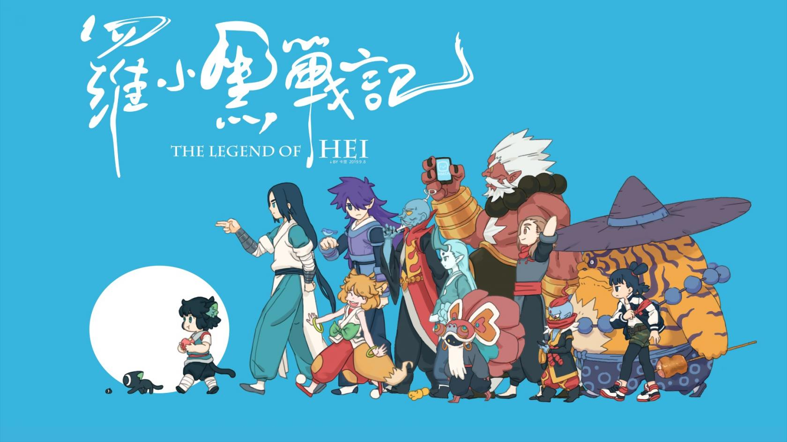

MTJJ(born 27 November 1984)
He is an independent animation producer from China, the director of The Legend of Hei
Experience
Introducions of Representive Work
Since its release in March 2011, the Flash animation of The legend of LUOXIAOHEI, with an episode length of 5-7 minutes, has quickly gained a high reputation and accumulated a large number of loyal audiences. It is updated at an average pace of 4 episodes a year from time to time. 28 episodes have been updated so far. Even though it was widely criticized by it updating speed, its rating on Douban (China's popular film and TV series rating website) remained stable at 9.6 points (10 in total), ranking first in domestic animated series.
Protagonist & Plot

Protagonist: LUOXIAOHEI "——" A small black cat in a Chinese animation.
Plot Xiaohei was beaten back to his original shape by a god for stealing the Sky Pearl and fleeing. When Xiaohei was living on the street, he was picked up by the human girl Xiaobai and named Luo Xiaohei. From this, a series of relaxed and fantastic cats' stories began.
Speaking of famous animated cats, you may think of Tom Cat, Doraemon, Hello Kitty, Cat Teacher-Ban and other famous 2-dimensional cats. And in China, we have a black cat named LUOXIAOHEI (a cat demon).

Some more tags for typography:
- Bold text
- Important text (basically same thing as bold text)
- Italic text
- Emphasized text
- Inserted text
This is an ordered list
- Coffee
- Tea
- Milk
This is a description list
- Coffee
- - black hot drink
- Milk
- - white cold drink
This is an unordered list
- Coffee
- Tea
- Milk